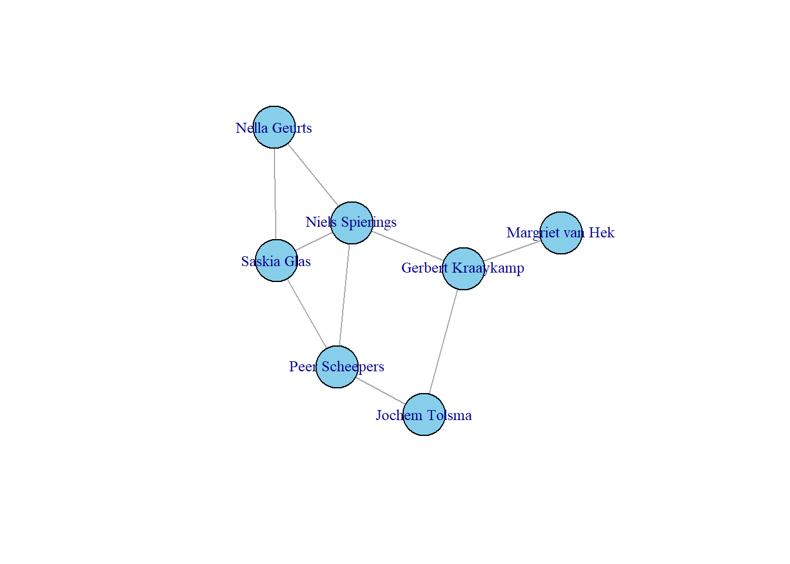
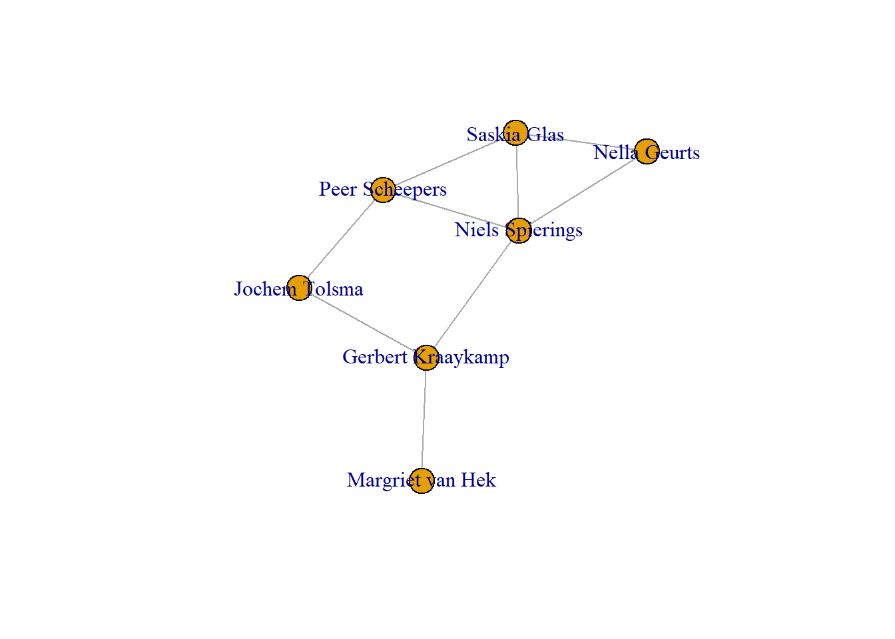

Last compiled on oktober, 2025
rm(list = ls())
gc()#> used (Mb) gc trigger (Mb) max used (Mb)
#> Ncells 1196646 64.0 2304490 123.1 2138754 114.3
#> Vcells 2001757 15.3 8388608 64.0 3103778 23.7# make yourself known to openAlex
options(openalexR.mailto = "hanne.wolthuis@ru.nl")url <- "https://api.openalex.org/authors?search=Jochem Tolsma"
# based on what you have learned so far, you would probably first try:
jt <- read_html("https://api.openalex.org/authors?search=Jochem+Tolsma") %>%
html_text2()
substr(jt, 1, 100)#> [1] "{\"meta\":{\"count\":1,\"db_response_time_ms\":147,\"page\":1,\"per_page\":25,\"groups_count\":null},\"results\":["jt_json <- fromJSON("https://api.openalex.org/authors?search=Jochem+Tolsma", simplifyVector = FALSE)
glimpse(jt_json, max.level = 1)#> List of 3
#> $ meta :List of 5
#> $ results :List of 1
#> $ group_by: list()jt_json[["results"]][[1]][["display_name"]]#> [1] "Jochem Tolsma"df_jt <- jt_json %>%
.$results %>%
.[[1]] %>%
discard(is_empty)df <- oa_fetch(entity = "author", search = "Jochem Tolsma")
fshowdf(df)| id | display_name | display_name_alternatives | relevance_score | ids | orcid | works_count | cited_by_count | counts_by_year | 2yr_mean_citedness | h_index | i10_index | last_known_institutions | topics | works_api_url |
|---|---|---|---|---|---|---|---|---|---|---|---|---|---|---|
| https://openalex.org/A5087380803 | Jochem Tolsma | J. Tolsma , Jochem Tolsma, J L Tolsma | 9021.72 | https://openalex.org/A5087380803 , https://orcid.org/0000-0002-4411-6932 | https://orcid.org/0000-0002-4411-6932 | 87 | 2116 | 2025, 2024, 2023, 2022, 2021, 2020, 2019, 2018, 2017, 2016, 2015, 2014, 2013, 2012, 2, 9, 5, 4, 4, 0, 4, 3, 3, 13, 4, 8, 6, 2, 1, 6, 4, 4, 4, 0, 3, 3, 2, 6, 3, 4, 4, 2, 167, 269, 255, 192, 245, 221, 179, 180, 114, 167, 135, 99, 77, 51 | 2.89 | 22 | 36 | https://openalex.org/I145872427, https://openalex.org/I169381384, https://ror.org/016xsfp80 , https://ror.org/012p63287 , Radboud University Nijmegen , University of Groningen , NL , NL , funder , funder , https://openalex.org/I145872427, https://openalex.org/I169381384 | 1 , 1 , 1 , 1 , 2 , 2 , 2 , 2 , 3 , 3 , 3 , 3 , 4 , 4 , 4 , 4 , 5 , 5 , 5 , 5 , 6 , 6 , 6 , 6 , 7 , 7 , 7 , 7 , 8 , 8 , 8 , 8 , 9 , 9 , 9 , 9 , 10 , 10 , 10 , 10 , 11 , 11 , 11 , 11 , 12 , 12 , 12 , 12 , 13 , 13 , 13 , 13 , 14 , 14 , 14 , 14 , 15 , 15 , 15 , 15 , 16 , 16 , 16 , 16 , 17 , 17 , 17 , 17 , 18 , 18 , 18 , 18 , 19 , 19 , 19 , 19 , 20 , 20 , 20 , 20 , 21 , 21 , 21 , 21 , 22 , 22 , 22 , 22 , 23 , 23 , 23 , 23 , 24 , 24 , 24 , 24 , 25 , 25 , 25 , 25 , 15 , 15 , 15 , 15 , 12 , 12 , 12 , 12 , 10 , 10 , 10 , 10 , 10 , 10 , 10 , 10 , 10 , 10 , 10 , 10 , 8 , 8 , 8 , 8 , 7 , 7 , 7 , 7 , 7 , 7 , 7 , 7 , 7 , 7 , 7 , 7 , 6 , 6 , 6 , 6 , 5 , 5 , 5 , 5 , 5 , 5 , 5 , 5 , 4 , 4 , 4 , 4 , 4 , 4 , 4 , 4 , 4 , 4 , 4 , 4 , 4 , 4 , 4 , 4 , 4 , 4 , 4 , 4 , 3 , 3 , 3 , 3 , 3 , 3 , 3 , 3 , 3 , 3 , 3 , 3 , 3 , 3 , 3 , 3 , 3 , 3 , 3 , 3 , 3 , 3 , 3 , 3 , 3 , 3 , 3 , 3 , 2 , 2 , 2 , 2 , https://openalex.org/T11239 , https://openalex.org/subfields/3312 , https://openalex.org/fields/33 , https://openalex.org/domains/2 , https://openalex.org/T11645 , https://openalex.org/subfields/3312 , https://openalex.org/fields/33 , https://openalex.org/domains/2 , https://openalex.org/T10314 , https://openalex.org/subfields/3312 , https://openalex.org/fields/33 , https://openalex.org/domains/2 , https://openalex.org/T12088 , https://openalex.org/subfields/3312 , https://openalex.org/fields/33 , https://openalex.org/domains/2 , https://openalex.org/T10108 , https://openalex.org/subfields/3320 , https://openalex.org/fields/33 , https://openalex.org/domains/2 , https://openalex.org/T10349 , https://openalex.org/subfields/3312 , https://openalex.org/fields/33 , https://openalex.org/domains/2 , https://openalex.org/T10557 , https://openalex.org/subfields/3315 , https://openalex.org/fields/33 , https://openalex.org/domains/2 , https://openalex.org/T10216 , https://openalex.org/subfields/3312 , https://openalex.org/fields/33 , https://openalex.org/domains/2 , https://openalex.org/T10235 , https://openalex.org/subfields/3306 , https://openalex.org/fields/33 , https://openalex.org/domains/2 , https://openalex.org/T13064 , https://openalex.org/subfields/3304 , https://openalex.org/fields/33 , https://openalex.org/domains/2 , https://openalex.org/T10762 , https://openalex.org/subfields/3203 , https://openalex.org/fields/32 , https://openalex.org/domains/2 , https://openalex.org/T10574 , https://openalex.org/subfields/3312 , https://openalex.org/fields/33 , https://openalex.org/domains/2 , https://openalex.org/T12592 , https://openalex.org/subfields/3109 , https://openalex.org/fields/31 , https://openalex.org/domains/3 , https://openalex.org/T10443 , https://openalex.org/subfields/3320 , https://openalex.org/fields/33 , https://openalex.org/domains/2 , https://openalex.org/T13709 , https://openalex.org/subfields/3304 , https://openalex.org/fields/33 , https://openalex.org/domains/2 , https://openalex.org/T11397 , https://openalex.org/subfields/3320 , https://openalex.org/fields/33 , https://openalex.org/domains/2 , https://openalex.org/T10674 , https://openalex.org/subfields/3304 , https://openalex.org/fields/33 , https://openalex.org/domains/2 , https://openalex.org/T10843 , https://openalex.org/subfields/3318 , https://openalex.org/fields/33 , https://openalex.org/domains/2 , https://openalex.org/T10208 , https://openalex.org/subfields/2002 , https://openalex.org/fields/20 , https://openalex.org/domains/2 , https://openalex.org/T10182 , https://openalex.org/subfields/3203 , https://openalex.org/fields/32 , https://openalex.org/domains/2 , https://openalex.org/T13532 , https://openalex.org/subfields/3304 , https://openalex.org/fields/33 , https://openalex.org/domains/2 , https://openalex.org/T11076 , https://openalex.org/subfields/3320 , https://openalex.org/fields/33 , https://openalex.org/domains/2 , https://openalex.org/T10652 , https://openalex.org/subfields/3312 , https://openalex.org/fields/33 , https://openalex.org/domains/2 , https://openalex.org/T10064 , https://openalex.org/subfields/3109 , https://openalex.org/fields/31 , https://openalex.org/domains/3 , https://openalex.org/T11120 , https://openalex.org/subfields/3312 , https://openalex.org/fields/33 , https://openalex.org/domains/2 , Social Capital and Networks , Sociology and Political Science , Social Sciences , Social Sciences , Urban, Neighborhood, and Segregation Studies , Sociology and Political Science , Social Sciences , Social Sciences , Social and Intergroup Psychology , Sociology and Political Science , Social Sciences , Social Sciences , Intergenerational and Educational Inequality Studies , Sociology and Political Science , Social Sciences , Social Sciences , Electoral Systems and Political Participation , Political Science and International Relations , Social Sciences , Social Sciences , Migration and Labor Dynamics , Sociology and Political Science , Social Sciences , Social Sciences , Social Media and Politics , Communication , Social Sciences , Social Sciences , Migration, Refugees, and Integration , Sociology and Political Science , Social Sciences , Social Sciences , Health disparities and outcomes , Health , Social Sciences , Social Sciences , Dutch Social and Cultural Studies , Education , Social Sciences , Social Sciences , Migration, Health and Trauma , Clinical Psychology , Psychology , Social Sciences , Crime Patterns and Interventions , Sociology and Political Science , Social Sciences , Social Sciences , Opinion Dynamics and Social Influence , Statistical and Nonlinear Physics , Physics and Astronomy , Physical Sciences , Social Policy and Reform Studies , Political Science and International Relations , Social Sciences , Social Sciences , Education in Diverse Contexts , Education , Social Sciences , Social Sciences , Populism, Right-Wing Movements , Political Science and International Relations , Social Sciences , Social Sciences , School Choice and Performance , Education , Social Sciences , Social Sciences , Diversity and Career in Medicine , Gender Studies , Social Sciences , Social Sciences , Labor market dynamics and wage inequality , Economics and Econometrics , Economics, Econometrics and Finance , Social Sciences , Child and Adolescent Psychosocial and Emotional Development, Clinical Psychology , Psychology , Social Sciences , Education Systems and Policy , Education , Social Sciences , Social Sciences , Policing Practices and Perceptions , Political Science and International Relations , Social Sciences , Social Sciences , Racial and Ethnic Identity Research , Sociology and Political Science , Social Sciences , Social Sciences , Complex Network Analysis Techniques , Statistical and Nonlinear Physics , Physics and Astronomy , Physical Sciences , Nonprofit Sector and Volunteering , Sociology and Political Science , Social Sciences , Social Sciences , topic , subfield , field , domain , topic , subfield , field , domain , topic , subfield , field , domain , topic , subfield , field , domain , topic , subfield , field , domain , topic , subfield , field , domain , topic , subfield , field , domain , topic , subfield , field , domain , topic , subfield , field , domain , topic , subfield , field , domain , topic , subfield , field , domain , topic , subfield , field , domain , topic , subfield , field , domain , topic , subfield , field , domain , topic , subfield , field , domain , topic , subfield , field , domain , topic , subfield , field , domain , topic , subfield , field , domain , topic , subfield , field , domain , topic , subfield , field , domain , topic , subfield , field , domain , topic , subfield , field , domain , topic , subfield , field , domain , topic , subfield , field , domain , topic , subfield , field , domain | https://api.openalex.org/works?filter=author.id:A5087380803 |
df_papers <- oa_fetch(entity = "works", author.id = df$id)
df_papers$authorships[[1]]$author#> NULLlibrary(dplyr)
library(tidyr)
df_authors <- df_papers %>%
select(id, display_name, publication_year, authorships) %>%
unnest(authorships, names_sep = "_") %>%
select(paper_id = id, paper_title = display_name, year = publication_year,
author_name = authorships_display_name, author_position = authorships_author_position)
head(df_authors)#> # A tibble: 6 × 5
#> paper_id paper_title year author_name author_position
#> <chr> <chr> <int> <chr> <chr>
#> 1 https://openalex.org/W2067927337 Ethnic Diversity and Its Effec… 2014 Tom van de… first
#> 2 https://openalex.org/W2067927337 Ethnic Diversity and Its Effec… 2014 Jochem Tol… last
#> 3 https://openalex.org/W2155408835 Anti-Muslim Attitudes in The N… 2010 Michael Sa… first
#> 4 https://openalex.org/W2155408835 Anti-Muslim Attitudes in The N… 2010 Peer Schee… middle
#> 5 https://openalex.org/W2155408835 Anti-Muslim Attitudes in The N… 2010 Jochem Tol… middle
#> 6 https://openalex.org/W2155408835 Anti-Muslim Attitudes in The N… 2010 Louk Hagen… lastlibrary(jsonlite)author_name <- "Nella Geurts"
# Fetch data from OpenAlex
url <- paste0("https://api.openalex.org/authors?search=", gsub(" ", "+", author_name))
jt_json <- fromJSON(url, simplifyVector = FALSE)
# Check the first result's display name
jt_json[["results"]][[1]][["display_name"]]#> [1] "Nella Geurts"# Get the author ID
author_id <- jt_json[["results"]][[1]][["id"]]
author_id#> [1] "https://openalex.org/A5016107698"# Fetch papers for this author
papers_url <- paste0("https://api.openalex.org/works?filter=author.id:", author_id)
papers_json <- fromJSON(papers_url, simplifyVector = FALSE)
# Extract the results
papers <- papers_json[["results"]]
# Turn into a dataframe
df_papers <- bind_rows(lapply(papers, function(x) {
data.frame(
paper_id = x$id,
paper_title = x$display_name,
publication_year = x$publication_year,
stringsAsFactors = FALSE
)
}))
head(df_papers)#> paper_id
#> 1 https://openalex.org/W4410463393
#> 2 https://openalex.org/W4410463485
#> 3 https://openalex.org/W3032478847
#> 4 https://openalex.org/W2536682329
#> 5 https://openalex.org/W4399763921
#> 6 https://openalex.org/W2980529039
#> paper_title
#> 1 Two peas in a pod? How to mix methods in ethnic and migration studies
#> 2 Mixed methods, mixed feelings: a review of hurdles faced and vaulting poles to apply when wanting to do and publish mixed methods research
#> 3 The lived experience of an integration paradox: why high-skilled migrants from Turkey experience little national belonging in the Netherlands
#> 4 Dynamics in intention to stay and changes in language proficiency of recent migrants in the Netherlands
#> 5 How do minoritized migrant-background citizens perceive their political representation? An intracategorical perspective
#> 6 Structural position and relative deprivation among recent migrants: a longitudinal take on the integration paradox
#> publication_year
#> 1 2025
#> 2 2025
#> 3 2020
#> 4 2016
#> 5 2024
#> 6 2019df_authors <- bind_rows(lapply(papers, function(p) {
authors <- p$authorships
data.frame(
paper_id = p$id,
paper_title = p$display_name,
year = p$publication_year,
author_name = sapply(authors, function(a) a$author$display_name),
author_position = sapply(authors, function(a) a$author_position),
stringsAsFactors = FALSE
)
}))
head(df_authors)#> paper_id
#> 1 https://openalex.org/W4410463393
#> 2 https://openalex.org/W4410463393
#> 3 https://openalex.org/W4410463393
#> 4 https://openalex.org/W4410463485
#> 5 https://openalex.org/W4410463485
#> 6 https://openalex.org/W3032478847
#> paper_title
#> 1 Two peas in a pod? How to mix methods in ethnic and migration studies
#> 2 Two peas in a pod? How to mix methods in ethnic and migration studies
#> 3 Two peas in a pod? How to mix methods in ethnic and migration studies
#> 4 Mixed methods, mixed feelings: a review of hurdles faced and vaulting poles to apply when wanting to do and publish mixed methods research
#> 5 Mixed methods, mixed feelings: a review of hurdles faced and vaulting poles to apply when wanting to do and publish mixed methods research
#> 6 The lived experience of an integration paradox: why high-skilled migrants from Turkey experience little national belonging in the Netherlands
#> year author_name author_position
#> 1 2025 Nella Geurts first
#> 2 2025 Tine Davids middle
#> 3 2025 Niels Spierings last
#> 4 2025 Niels Spierings first
#> 5 2025 Nella Geurts last
#> 6 2020 Nella Geurts firstauthor_list <- c("Nella Geurts", "Niels Spierings", "Margriet van Hek", "Saskia Glas", "Jochem Tolsma", "Peer Scheepers", "Gerbert Kraaykamp" )
all_authors_df <- bind_rows(lapply(author_list, function(author_name) {
# Get author ID
url <- paste0("https://api.openalex.org/authors?search=", gsub(" ", "+", author_name))
author_json <- fromJSON(url, simplifyVector = FALSE)
if(length(author_json$results) == 0) return(NULL) # skip if not found
author_id <- author_json$results[[1]]$id
# Get papers
papers_url <- paste0("https://api.openalex.org/works?filter=author.id:", author_id)
papers_json <- fromJSON(papers_url, simplifyVector = FALSE)
papers <- papers_json$results
# Extract co-authors
bind_rows(lapply(papers, function(p) {
authors <- p$authorships
data.frame(
paper_id = p$id,
paper_title = p$display_name,
year = p$publication_year,
author_name = sapply(authors, function(a) a$author$display_name),
author_position = sapply(authors, function(a) a$author_position),
stringsAsFactors = FALSE
)
}))
}))
head(all_authors_df)#> paper_id
#> 1 https://openalex.org/W4410463393
#> 2 https://openalex.org/W4410463393
#> 3 https://openalex.org/W4410463393
#> 4 https://openalex.org/W4410463485
#> 5 https://openalex.org/W4410463485
#> 6 https://openalex.org/W3032478847
#> paper_title
#> 1 Two peas in a pod? How to mix methods in ethnic and migration studies
#> 2 Two peas in a pod? How to mix methods in ethnic and migration studies
#> 3 Two peas in a pod? How to mix methods in ethnic and migration studies
#> 4 Mixed methods, mixed feelings: a review of hurdles faced and vaulting poles to apply when wanting to do and publish mixed methods research
#> 5 Mixed methods, mixed feelings: a review of hurdles faced and vaulting poles to apply when wanting to do and publish mixed methods research
#> 6 The lived experience of an integration paradox: why high-skilled migrants from Turkey experience little national belonging in the Netherlands
#> year author_name author_position
#> 1 2025 Nella Geurts first
#> 2 2025 Tine Davids middle
#> 3 2025 Niels Spierings last
#> 4 2025 Niels Spierings first
#> 5 2025 Nella Geurts last
#> 6 2020 Nella Geurts firstview(all_authors_df)library(dplyr)
# Step 1: Filter only your authors and unique combinations
df_filtered <- all_authors_df %>%
filter(author_name %in% author_list) %>%
select(paper_id, author_name) %>%
distinct()
# Step 2: Initialize adjacency matrix
adj_matrix <- matrix(0,
nrow = length(author_list),
ncol = length(author_list),
dimnames = list(author_list, author_list))
# Step 3: Fill in 1 if authors collaborated on a paper
for(paper in unique(df_filtered$paper_id)) {
authors <- df_filtered %>% filter(paper_id == paper) %>% pull(author_name)
if(length(authors) > 1) {
# all pairs get 1
combs <- t(combn(authors, 2))
for(i in 1:nrow(combs)) {
a1 <- combs[i,1]
a2 <- combs[i,2]
adj_matrix[a1, a2] <- 1
adj_matrix[a2, a1] <- 1 # symmetric
}
}
}
# Check
adj_matrix#> Nella Geurts Niels Spierings Margriet van Hek Saskia Glas Jochem Tolsma
#> Nella Geurts 0 1 0 1 0
#> Niels Spierings 1 0 0 1 0
#> Margriet van Hek 0 0 0 0 0
#> Saskia Glas 1 1 0 0 0
#> Jochem Tolsma 0 0 0 0 0
#> Peer Scheepers 0 1 0 1 1
#> Gerbert Kraaykamp 0 1 1 0 1
#> Peer Scheepers Gerbert Kraaykamp
#> Nella Geurts 0 0
#> Niels Spierings 1 1
#> Margriet van Hek 0 1
#> Saskia Glas 1 0
#> Jochem Tolsma 1 1
#> Peer Scheepers 0 0
#> Gerbert Kraaykamp 0 0require("igraph")
net_un <- adj_matrix + t(adj_matrix)
net_un[net_un > 1] <- 1 # ensure 1/0
diag(net_un) <- 0 # remove self-loops
netG <- graph_from_adjacency_matrix(net_un, mode = "undirected")
plot(netG, vertex.size = 30, vertex.color = "skyblue", vertex.label.cex = 0.8)
igraph::transitivity(netG, type = "undirected")#> [1] 0.3529412plot(netG)